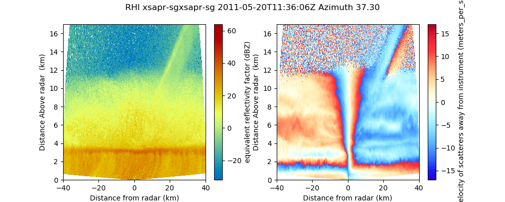

An example which creates a two panel RHI plot of a Sigmet file. The fields included in the two panels are reflectivity and doppler velocity.
Python source code: plot_rhi_two_panel.py
print(__doc__)
# Author: Jonathan J. Helmus (jhelmus@anl.gov)
# License: BSD 3 clause
import matplotlib.pyplot as plt
import pyart
# read the data and create the display object
filename = 'XSW110520113537.RAW7HHL'
radar = pyart.io.read_rsl(filename)
display = pyart.graph.RadarDisplay(radar)
# fields to plot and ranges
fields_to_plot = ['reflectivity_horizontal', 'mean_doppler_velocity']
ranges = [(-32, 64), (-17.0, 17.0)]
# plot the data
nplots = len(fields_to_plot)
plt.figure(figsize=[5 * nplots, 4])
# plot each field
for plot_num in xrange(nplots):
field = fields_to_plot[plot_num]
vmin, vmax = ranges[plot_num]
plt.subplot(1, nplots, plot_num + 1)
display.plot_rhi(field, 0, vmin=vmin, vmax=vmax, title_flag=False)
display.set_limits(ylim=[0, 17])
# set the figure title and show
radar_name = display.radar_name
time_text = ' ' + display.time_begin.isoformat() + 'Z '
azimuth = radar.fixed_angle['data'][0]
title = 'RHI ' + radar_name + time_text + 'Azimuth %.2f' % (azimuth)
plt.suptitle(title)
plt.show()
Total running time of the example: 1.67 seconds